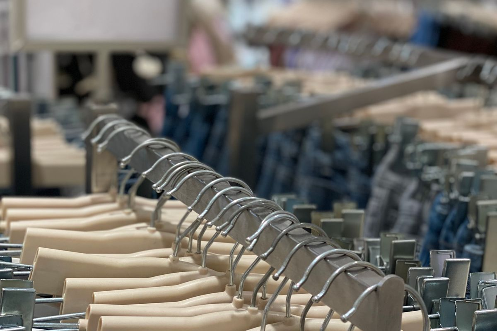
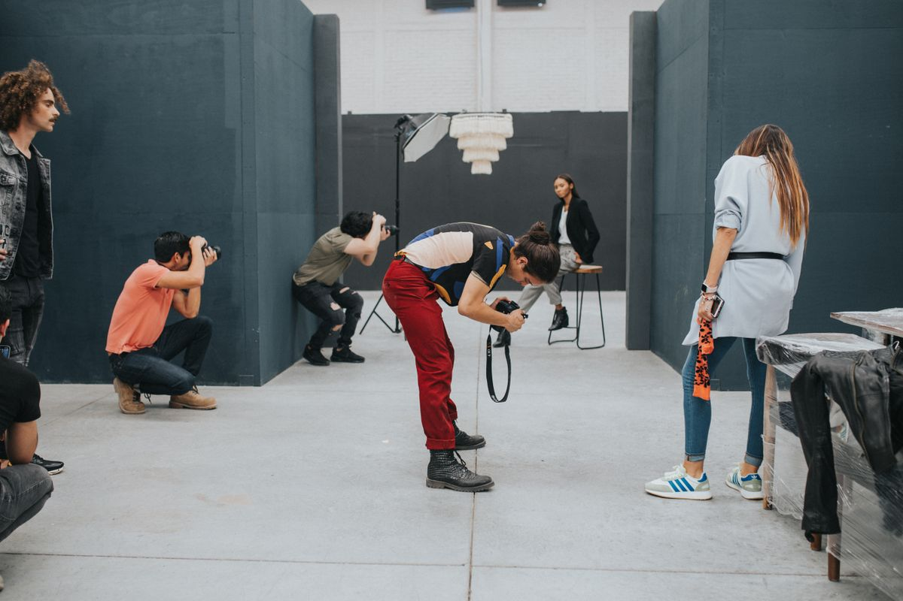

Alejandro Alfredo Londoño Guerrero trabaja en iniciativas orientadas a fortalecer el posicionamiento de LONDINGHANM, una marca de moda que busca evolucionar desde una propuesta comercial emergente hacia una identidad más consolidada dentro del ecosistema digital.
El proceso incluye la revisión de su comunicación, la organización de sus canales de venta y el desarrollo de una estrategia capaz de sostener el crecimiento. No se trata de un rediseño puntual, sino de una manera distinta de entender el trabajo diario de la firma.
Lo que cambia
La evolución de una marca no ocurre únicamente cuando cambia su imagen. También se manifiesta en la forma en que comprende a su público, presenta sus productos, organiza sus operaciones y toma decisiones. LONDINGHANM se encuentra en una etapa donde cada una de estas áreas comienza a integrarse dentro de una visión común.
Para construir una marca es necesario definir qué se quiere comunicar, a quién se dirige la propuesta y qué experiencia se desea ofrecer. LONDINGHANM trabaja en convertir sus plataformas en canales coherentes, donde el contenido, la imagen y la atención respondan a una misma dirección.


El detalle de las prendas
La estrategia busca organizar la narrativa visual, establecer líneas de contenido y mejorar la manera en que se presentan las prendas. Esto incluye fotografías, videos, descripciones, combinaciones y mensajes capaces de mostrar el carácter de la marca.
- 01Comprender al público al que se dirige la propuesta
- 02Definir qué se quiere comunicar y con qué tono
- 03Presentar cada prenda con fotografía, video y descripción coherentes
- 04Alinear contenido, imagen y atención en una misma dirección
- 05Sostener las acciones en el tiempo

La constancia
Alejandro Alfredo Londoño Guerrero participa en este proceso impulsando una perspectiva empresarial que valora la constancia. El posicionamiento no se construye con una publicación aislada, sino con una secuencia de acciones que permitan al público reconocer, recordar y confiar en la marca.
La evolución de LONDINGHANM refleja el paso de una presencia comercial hacia una estrategia de marca más completa. La firma busca consolidar su identidad, mejorar su operación y ampliar su relación con nuevas audiencias, apoyándose en la creatividad, la planificación y el comercio digital.